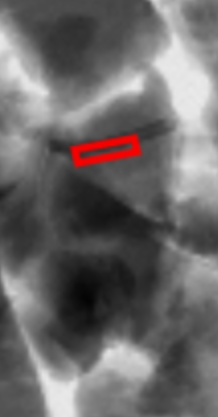
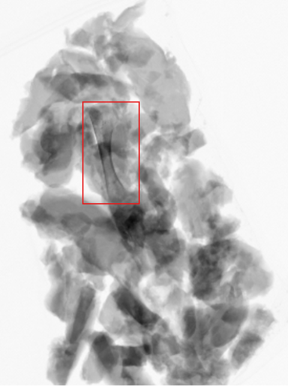
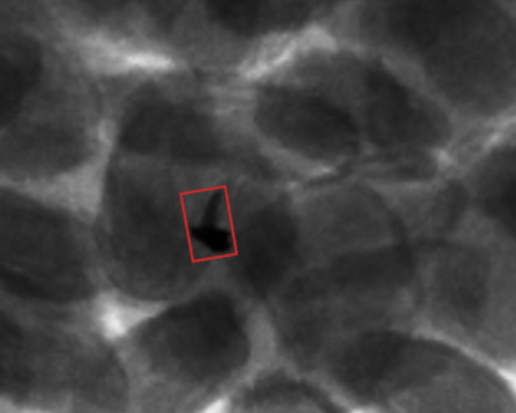
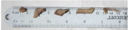

Case study
AI bone detection in poultry production.
An anonymized protein application showing how GreyscaleAI used AI models trained in real production environments to distinguish true bone from natural poultry variation.
100 fpm
Real production rejects shown in the source application spotlight.
Fewer false rejects
Reduce unnecessary rework while keeping sensitivity high.
Shifts, products, plants
Models trained against real variability rather than fixed assumptions.
-
Challenge
High-resolution and dual-energy detectors produce richer information, but classical algorithms can confuse cartilage, ligaments, tendons, texture changes, and true bone. -
Solution
GreyscaleAI trained AI models directly in real poultry production environments so the software could learn stable bone patterns while accounting for natural product variability. -
Outcome
The application spotlight reports significantly fewer false rejects, dramatic improvement over legacy dual-energy approaches, accurate detection of true bone and tiny metal fragments, and more stable detection across shifts, products, and plants. -
Why it matters
Food safety teams get better discrimination between true risk and normal product variation, while plant teams avoid sensitivity settings that slow the line or create unnecessary rework.




Related pages